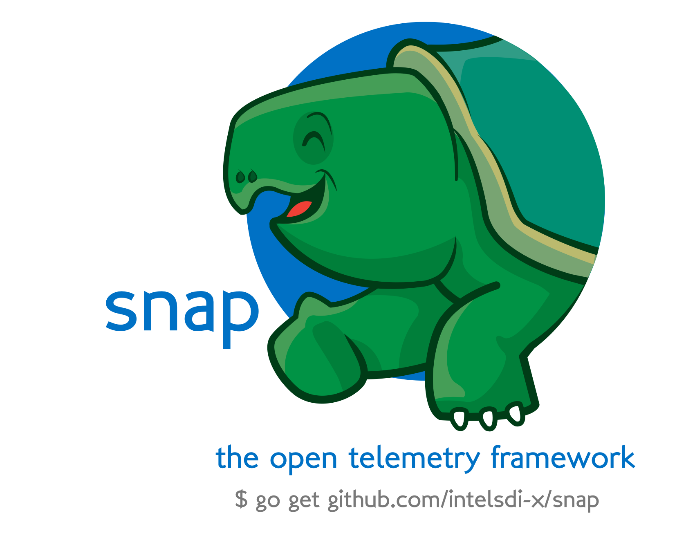

Reflection
Power And Elegance
GopherCon 2016
Created by Emily Gu / @CandySmurfy
https://github.com/candysmurf/GoReflectionTalk
Keyboard Shortcuts
| Full Screen | F |
| Next Slide | Space bar |
| Slide Notes | S |
| Thumbnail View | Esc |
View online at https://github.com/candysmurf/GoReflectionTalk
Note: Some slides move down instead of to the side, so use the space bar to advance slides.
About Me
Today is about Go Reflection
I currently work for Intel Corporation as a cloud software engineer in the Software Defined Infrastructure (SDI-X) Emerging Tech group.
William Kennedy is my teacher for Go. His "mechanical sympathy" truly inspired me.
Prior to Go, I used Java, Spring Framework, RabbitMQ, Cassandra, Logstash, Elasticsearch...and worked on ECommerce, Big Data and Analytics.
Reflection?

Expert Said
" Compared to a disk seek or network transfer, the cost of reflection will be negligible."
— Dave Cheney
" Integrity, Readability, Simplicity first! "
— William Kennedy
"Code Integrity"
Code integrity is the default behavior of Reflection
- Read and write to a correct memory address
- Reliable functional behaviors

"Code Readbility"
Reflection let you write concise code
It's the Lines and Complexity of the Code
func MultiplyBy2(x int) int {
return x * 2
}
func MultiplyBy2(x int) int {
return x << 1
}
"Premature Optimizations and Programming Myths are The Root of all Evil"
— Alvaro Videla 2015
"Code Simplicity"
- Algorithem Efficiency
- Good use of Resources

Reflection let you write general purpose code for Data Transformation. Otherwise, you'll have to write code for every type.
Reflection
" In computer science, reflection is the ability of a computer program to examine, introspect, and modify its own structure and behavior at runtime."
—@Wikipedia
Reflection - Key Enabler
- Object Relational Mapping (ORM)
- Dependency Injection Framework (IoC)
- Plugin Framework
- Data Transformation
- Testing Framework
"fmt"
"encoding/json"
"encoding/xml"
"text/template"
"html/template"
Snug into Reflection
Reflection Basics
- Map
- Pointer
- Slice
- Struct

Reflection Interface
- Map
- Pointer
- Slice
- Struct

Reflection Inspection
- Integer
- Struct

Go Reflection package provides robust operations on types and values during the run-time.
Reflection Case Study
snap-plugin-collector-cassandra
| org.apache.cassandra.metrics: | Domain |
// XMLServer represents Server element
type XMLServer struct {
XMLName xml.Name `xml:"Server"`
Domain XMLDomain `xml:"Domain"`
}
// XMLDomain represents Domain element
type XMLDomain struct {
XMLName xml.Name `xml:"Domain"`
MBeans []XMLMBean `xml:"MBean"`
}
// XMLMBean represents MBean element
type XMLMBean struct {
XMLName xml.Name `xml:"MBean"`
Objectname string `xml:"objectname,attr"`
}
snap-plugin-collector-cassandra
| Cache.KeyCache: | FifteenMinuteHitRate |
| ClientRequest.CASRead: | ContentionHistogram |
//XMLAttributes represents Attribute elements
type XMLAttributes struct {
XMLName xml.Name `xml:"MBean"`
Attributes []XMLAttribute `xml:"Attribute"`
}
// XMLAttribute represents Attribute element
type XMLAttribute struct {
XMLName xml.Name `xml:"Attribute"`
Name string `xml:"name,attr"`
Type string `xml:"type,attr"`
Value float64 `xml:"value,attr"`
}
Reflection Case Study
snap-plugin-collector-elasticsearch
| ES cluster Health: | Cluster JSON |
| ES Cluster Design: | Cluster Struct |
| ES node Stats: | Node JSON |
| ES Node Design: | Node Structs |
| Node Recursive Reflection: | 59 LOC(Line of Code) |
Reflection Case Study
snap-plugin-collector-redfish
| Redfish API: | Schema |
| Recursive Reflection: | 60 LOC(Line of Code) |
Reflection Caveats
- Code analysis and refactoring tools
- Runtime errors instead of compile-time errors
- Inspection cost

Everything costs you
A line of code costs you
"software bugs cost the US economy $59.5 billion annually."
— the Department of Commerce’s National Institute of Standards and Technology (NIST) 2003
"Cambridge University study states software bugs cost economy $312 billion per year"
— Cambridge University Judge Business School 2013
— the Department of Commerce’s National Institute of Standards and Technology (NIST) 2003
"Cambridge University study states software bugs cost economy $312 billion per year"
— Cambridge University Judge Business School 2013
We're Gophers
Productivity vs. Performance
We didn't choose C or Assembly language, but Go!
Not Just Reflection!
Often designers do complicated things that improve the capacity on a particular hardware platform when it might actually be cheaper to buy more hardware.
—Martin Fowler 2012
Demo
Snap Plugin Data Transformation
The End
Reflection is a perfect use case for transforming data into different formats. I have shown you how the reflection package helped me to write less code in less time. Avoiding the use of reflection would have increased the complexity of the code. Reducing complexity while preserving maintainability must always be a priority. Learn more about the reflection package and use it when it is the best tool for the job.
Thanks!
Contact info
- Twitter: @CandySmurfy
- GitHub for slides: github.com/candysmurf/GoReflectionTalk
- Email: 77.ears@gmail.com